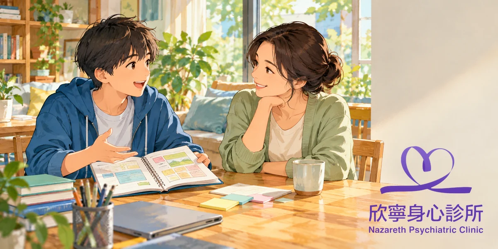

支持自主怎麼做？從幼兒到青少年，陪孩子練習選擇與負責
同樣是尊重孩子，幼兒需要簡單選擇，國小需要練習規劃，青少年則需要更多協商與信任。
用心陪伴不取代一起商量向未來
先掌握三個重點
- 自主不是自己來：支持自主，是讓孩子的想法被聽見，並在能力與安全允許的範圍內參與決定。大人仍然提供協助、說明理由及必要界線。
- 年齡不同，做法也不同：幼兒從兩個小選項開始；國小孩子學習安排步驟；青少年可以逐步參與訂規則、管理時間與承擔後果。
- 先理解，再一起商量：面對拒絕、拖延或意見不同，我們可以先問原因，再給真實可行的選項。涉及安全的事，大人仍須負責保護。
支持自主，不同年齡都有一個共同原則
孩子真正需要的不是每件事都自己決定，而是在有人陪伴的情況下，逐漸覺得「我的想法值得被聽見」。所謂支持自主，是先了解孩子重視什麼，再依發展能力讓他參與選擇；不是一味聽話，也不是完全不管。
我們可以把教養想成慢慢交出方向盤：幼兒先練習簡單選擇，學齡兒童學習規劃，青少年則逐步參與較複雜的決定。年齡只是參考，還要看孩子的理解能力、情緒狀態、身心特質與當下需要多少協助。
幼兒約 2–5 歲：先從兩個選項開始
幼兒正在練習表達喜好，卻還不擅長等待、預估時間或控制強烈情緒。這個階段，大人先把不能改變的事說清楚，再提供簡短、具體、真的能選的兩個選項；選項太多，反而容易讓孩子無所適從。
出門穿衣：「外面有點冷，需要穿外套。今天想穿藍色的，還是綠色的？」
結束遊戲：「我知道還想玩。現在要回家，你想牽手走，還是讓我抱著走？」
如果孩子哭鬧、無法做選擇，我們可以先安撫，再協助完成，不必硬要他立刻回答。大人的明確引導與自主支持可以同時存在，幼兒互動研究也觀察到兩者有助於理解合作情境。[3]
國小約 6–12 歲：一起安排步驟與時間
國小孩子漸漸能比較選項、預估短時間內的後果，但安排功課與調整情緒仍需要練習。這時不只問「要哪一個」，還可以陪他想「先做什麼、遇到困難怎麼辦」，讓他慢慢學會規劃，而不是把整張時間表交給大人決定。
面對功課：「今天兩份作業都要完成，你想先做數學，還是先讀國語？哪份需要我先陪你看一題？」
挑選活動：「你比較想試畫畫還是球類？我們先看時間和交通，再一起排一個月試試。」
孩子忘了計畫，不急著貼上懶惰或不負責任的標籤；我們可以用清單、提醒或一起做第一步降低難度。作業研究的統合分析發現，家長以支持自主的方式參與，與較佳的學業表現有關。[4]
青少年約 13–18 歲：增加協商與合理隱私
青少年開始更重視同儕、個人興趣與私人空間，也需要練習做出較長遠的決定。這時大人的角色可以從代替安排，慢慢轉為討論原則、辨識風險和共同檢視後果；詢問意見時，也要願意接受孩子提出不同方案。
手機時間：「我們都希望睡眠不被影響。你先提出使用安排，我也說明我的擔心，一週後再看看怎麼調整。」
與朋友出門：「你想自己安排很重要。先讓我們了解地點、交通及聯絡方式，安全確認後，細節由你決定。」
隱私不代表毫無界線，家長也不需要查問每一則訊息。當出現欺凌、威脅、失聯或其他危險訊號時，仍須積極介入；若孩子暫時還無法獨立處理某件事，可以先共同決定，再逐漸增加空間。
不論幾歲：哪些事能選，哪些需要堅持？
支持自主不是放任，也不是假裝有選擇。例如外出要戴安全帽、不能傷害他人，屬於大人必須守住的安全界線；但帽子的款式、出門前的準備順序，往往還有商量空間。規範能說出原因，比只有「因為我說了算」更能幫助理解。
遇到孩子說「我不要」，我們可以先回應：「我聽到你不想這樣做，想知道哪裡讓你不舒服。」接著分開討論可以調整的部分與不能妥協的安全要求。若剛才說了重話，不妨道歉並重談做法；道歉不等於取消界線。
研究帶給我們什麼教養提醒？
近年的跨文化統合分析發現，家長較多支持自主，與孩子較佳的幸福感、較少的情緒及行為困擾呈現關聯；用羞愧、內疚或撤回關愛施壓，則與較不理想的心理狀態有關。[1][2]
這些結果並不是單一方法的效果保證，也不能直接證明因果。實際生活裡，尊重意願、溫暖陪伴、清楚規範與適齡協助需要一起存在；比起追求完美說法，更重要的是持續觀察孩子真正需要什麼。
想多了解研究怎麼看支持自主
三個可以一起開始的具體做法
01 幼兒：每天練習一次小選擇
我們可以從衣服、故事或收玩具的順序開始，提供兩個都能接受的選項。孩子沒選出來時，先協助，不必用選擇當作考試。
02 國小：一起列出兩個步驟
從一次功課或家事開始，和孩子寫下「先做什麼、完成後怎麼確認」。遇到卡關時先陪做第一步，再把能完成的部分交還給他。
03 青少年：討論一項可調整規則
挑選手機、外出或假日安排，邀請孩子提出方案，家長說明安全與生活底線。先試行一段時間，再一起回顧，而非一次決定永久規則。
什麼情況需要額外協助？
如果親子衝突反覆升高，已影響孩子的睡眠、上學、人際或家庭安全，可以邀請學校輔導人員、兒少心理專業人員或醫師一起評估，不必讓任何一方獨自承擔。
若出現自傷、傷人風險、暴力或立即的人身危險，請立即尋求醫療協助或緊急救援。此時先確保安全，不需要等到親子間有共識才行動。